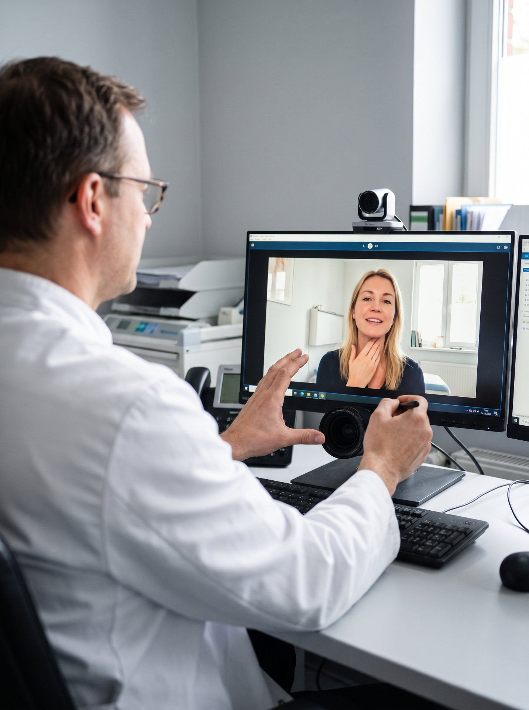
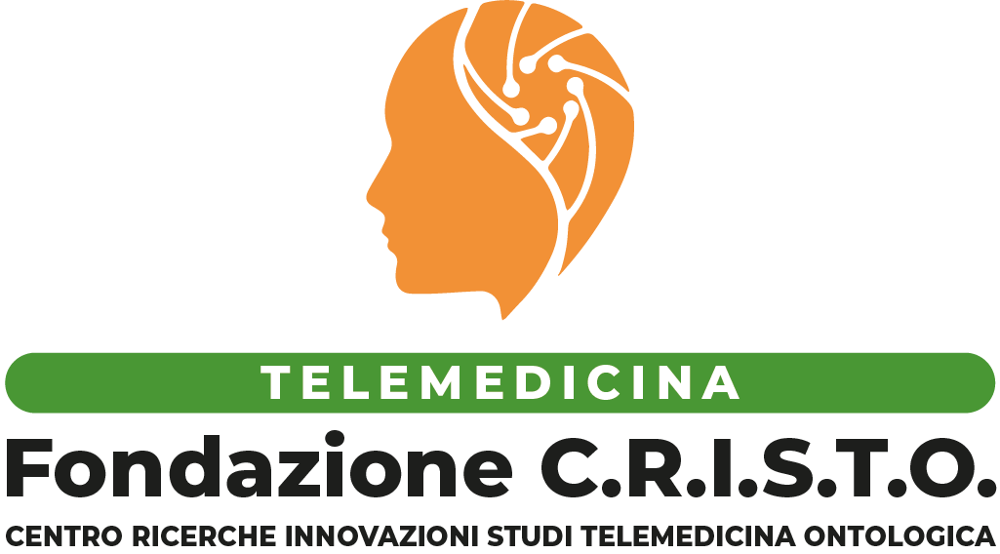
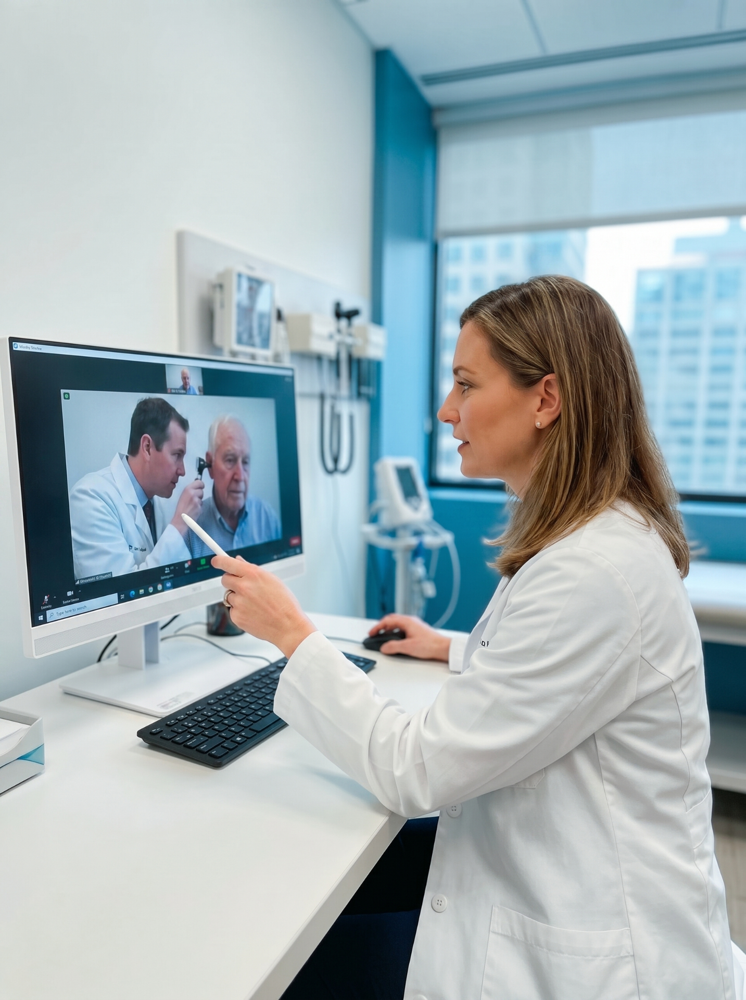
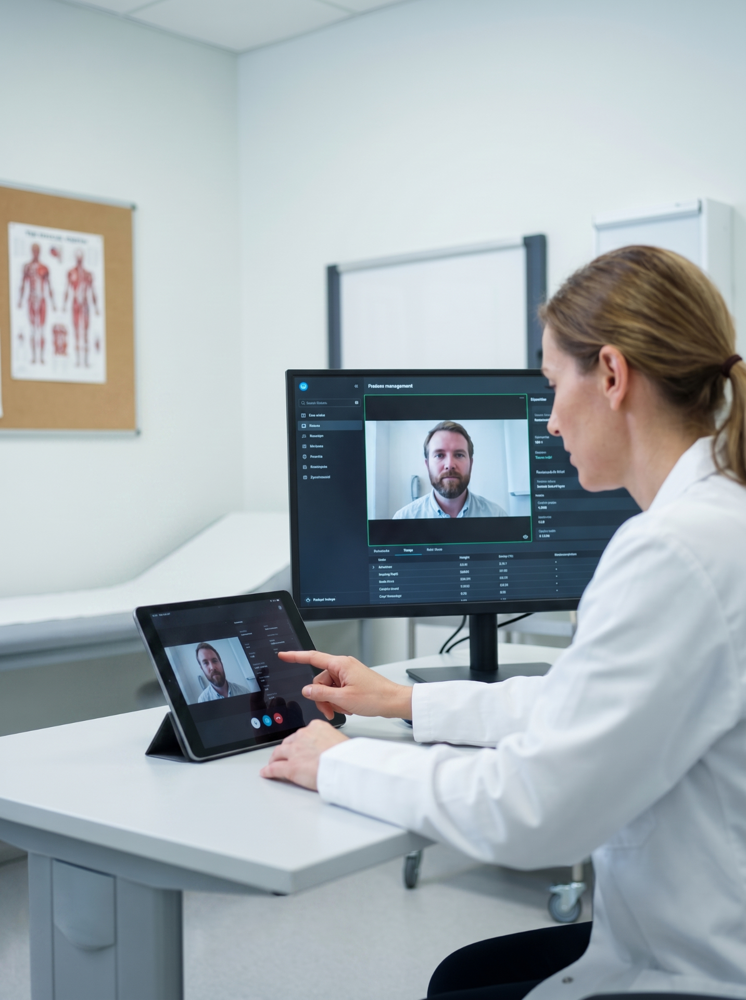
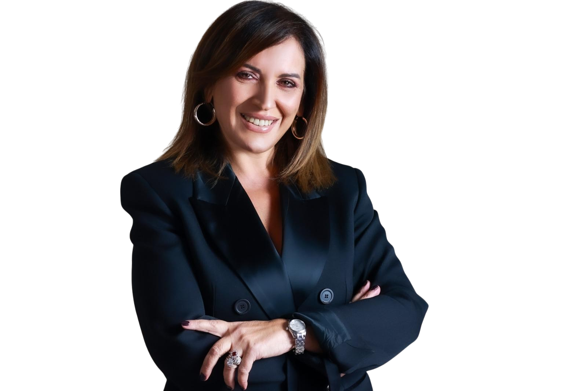

Un nuovo protocollo per il monitoraggio remoto dei pazienti cronici.
Presentati i primi risultati di uno studio pilota condotto in collaborazione con tre presidi ospedalieri italiani.
Leggi l'articolo →
ContattaciTELEMEDICINA SPECIALISTICAFondazione C.R.I.S.T.O.
Centro Ricerche · Innovazioni · Studi · Tecnologici · Otofarma. Una fondazione italiana che progetta tecnologie innovative strumentali e robotiche per rendere la telemedicina specialistica accessibile, sicura e profondamente umana.

Cosa Facciamo
La Fondazione C.R.I.S.T.O. — Centro Ricerche Innovazioni Studi Tecnologici Otofarma — è una fondazione italiana di ricerca scientifica e sperimentazione. Progettiamo tecnologie innovative, strumentali e robotiche, nel campo della telemedicina specialistica, con particolare attenzione alla prevenzione e riabilitazione delle ipoacusie e alla telemedicina audiologica.
Ci impegniamo per una medicina equa, capace di connettere paziente e medico decentrando le cure oggi possibili solo attraverso strutture ospedaliere. Piattaforme certificate, protocolli condivisi e una rete socio-sanitaria integrata: il cittadino al centro della ricerca, per migliorare la qualità della vita nel percorso sanitario.
News & Studi

Presentati i primi risultati di uno studio pilota condotto in collaborazione con tre presidi ospedalieri italiani.
Leggi l'articolo →
Un percorso rivolto a medici, tecnici e caregiver per un uso consapevole della tecnologia in ambito clinico.
Leggi l'articolo →Clinici, ricercatori e giuristi insieme per orientare ricerca e pratica secondo principi condivisi.
Leggi l'articolo →
Messaggio di Visione
Ho fondato C.R.I.S.T.O. con una convinzione profonda: la ricerca scientifica e la tecnologia hanno senso solo quando si mettono al servizio della persona. La nostra missione è portare la telemedicina specialistica là dove oggi non arriva — nelle case, nei piccoli centri, accanto a chi non può raggiungere un grande ospedale — restituendo dignità, ascolto e continuità di cura a ogni paziente.
La visione che ci guida è quella di una medicina umana e connessa: dispositivi robotici e piattaforme certificate che non sostituiscono il medico, ma ne amplificano la sensibilità clinica; protocolli condivisi che uniscono ospedali, territorio e famiglia in un'unica rete di prossimità. Ogni innovazione della Fondazione nasce da una domanda semplice: come possiamo far sentire il paziente davvero al centro? È da questa domanda che, ogni giorno, ricominciamo.
Contatti
Scriveteci o venite a trovarci: saremo felici di ascoltarvi e di condividere il nostro lavoro con voi.
Fondazione C.R.I.S.T.O.
Via Vicinale S. Maria del Pianto
Centro Polifunzionale Torre 2
Palazzo Otofarma
80144 — Napoli (NA), Italia
Scrivici
Per informazioni generali sulla Fondazione, richieste stampa e comunicazione.
Lavora con noi
Per proposte di ricerca, partnership scientifiche e attività di formazione.